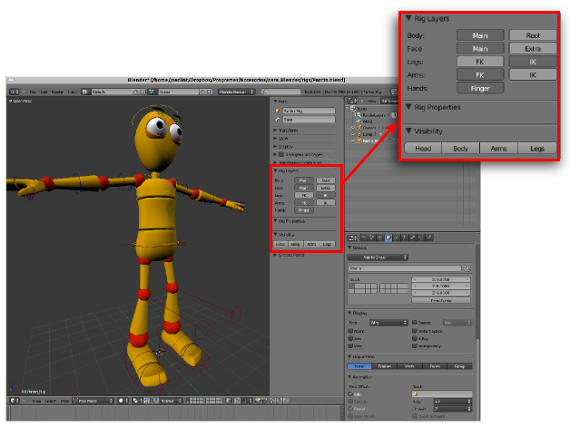

Versiones antiguas
Cuando nos metemos a fondo con Blender y comenzamos a descargar ejemplos de internet es posible que la última versión de Blender no abra adecuadamente el archivo cuando tiene incorporados scripts extras. Esto ocurre porque la API que gestiona el programa a nivel interno ha evolucionado en su lenguaje y las viejas semánticas no son bien interpretadas.
Uno de los ejemplos más conocidos es el famoso personaje Pantin que se puede descargar libremente.
Los controladores que se señalan en la imagen anterior son fruto de un script del autor Kiopaa y que está incorporado en el archivo. Ese script funcionaba perfectamente en la serie 2.4x y Kiopaa lo adaptó nada más salir la versión 2.50 Alpha 0 pero acto seguido la API de Blender cambió y esos controladores no salen en ninguna versión posterior. Es muy posible que al escribir estas líneas ya esté solucionado el problema por algún programador que haga público el nuevo archivo pero lo que nos importa aquí es comprender el concepto.